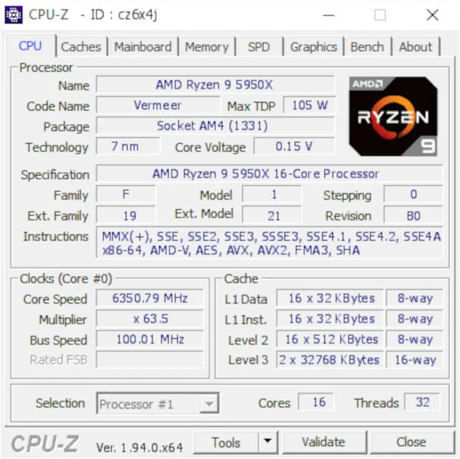
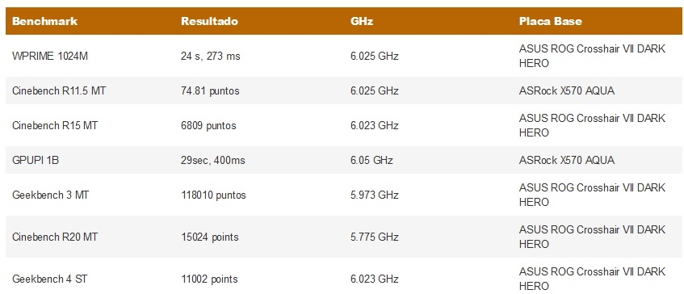
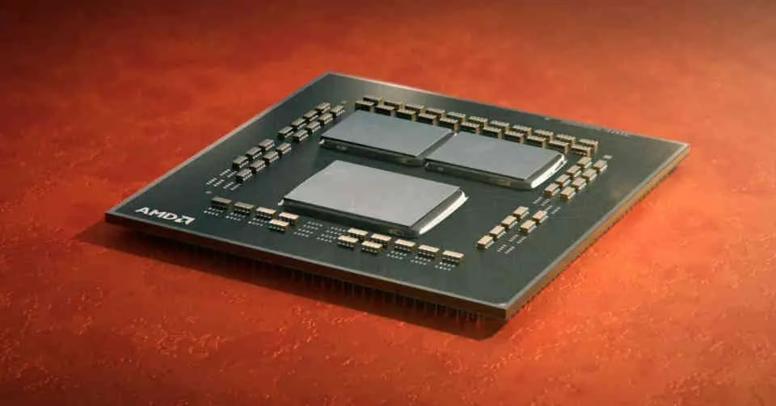

Si os gustaría saber la velocidad de reloj máxima que pueden alcanzar los nuevos procesadores de AMD, especialmente el Ryzen 9 5950X, y no quieres dejarte el salario en comprar uno de estos potentes procesadores para ponerlo a prueba. Entonces estas de suerte porque los aficionados el overclock ya han hecho sus primeras pruebas con los nuevos Ryzen 5000, especialmente con el Ryzen 9 5950X con el que han superado la barrera de los 6 GHz
Uno de los objetivos de los que se dedican al overclock extremo es obtener la máxima velocidad posible de los procesadores, especialmente si estos son los de última generación. Por lo que no es de extrañar que le hayan echado el ojo al Ryzen 9 5950X, el más potente de los Ryzen 5000, para ver que velocidades de reloj puede alcanzar, con el que han super todos los récords que ha habido hasta ahora. Si hasta poco la pregunta era si los nuevos procesadores superarían la barrera de los 5 GHz, resulta que la gama Ryzen 5000 tiene la capacidad de superar los 6 GHz de velocidad, lo que dice mucho de las mejores de AMD en la arquitectura Zen 3 y nos asegura altas velocidades de reloj en las futuras iteraciones de la arquitectura Zen.
Acelerando el Ryzen 9 5950X a más de 6 GHz
El primer resultado a destacar es el del récord del mundo, hasta este momento de la frecuencia alcanzada por una CPU para PC. Y es que un afamado overclock taiwanés, TSAIK, ha conseguido colocar el Ryzen 9 5950X a la increíble velocidad de 6.35 GHz en todos sus 16 núcleos. Para ello ha utilizado refrigeración LN2 y ha colocado el voltaje del procesador a 0.15 V. Todo ello haciendo uso de una placa base MSI MEG X570 GODLIKE.
Un segundo overclocker, Der8auer, ha conseguido subir el Ryzen 9 a 5950X a 5.85 GHz, haciendo uso también de refrigeración LN2 y un voltaje de 1.756 V otorgando 255 amperios a la CPU. Bajo esta velocidad la potente CPU de 16 núcleos de AMD alcanza 14,275 puntos en el Cinebench R20.
Los resultados más destacables obtenidos haciendo overclock al Ryzen 9 5950X aparte de los ya mencionados son los siguientes:
¿Qué velocidad alcanza el resto de la gama Ryzen 5000?
Los overclockers no solo han probado la velocidad máxima del Ryzen 9 5950X, sino también toda la gama entera de los nuevos procesadores de AMD basados en Zen 3.
Empezando por el Ryzen 9 5900X de 12 núcleos, han sido capaces de colocarlo también a la velocidad máxima de 6.35 GHz. Mientras que el Ryzen 7 5800X de 8 núcleos no ha llegado a superar la barrera de los 6 GHz y se ha quedado a las puertas con una velocidad. 5.975 GHz. Y en cuanto al 5600X de 6 núcleos se ha conseguido llegar a los 6.1 GHz.
Teniendo en cuenta que todos los procesadores parten de la misma arquitectura, no debería ser difícil obtener los 6.35 GHz de velocidad de reloj, pero por el momento el récord ha sido obtenido en la placa base MSI MEG X570 GODLIKE, sobre la que los overclockers no han probados los otros procesadores de la gama Ryzen.

Tal es así que MSI no ha tardado en promocionar su placa base como uno de los elementos clave para conseguir la increíble velocidad de reloj de 6.35 GHz con los nuevos Ryzen 5000, la más alta conseguida en una CPU doméstica hasta ahora.